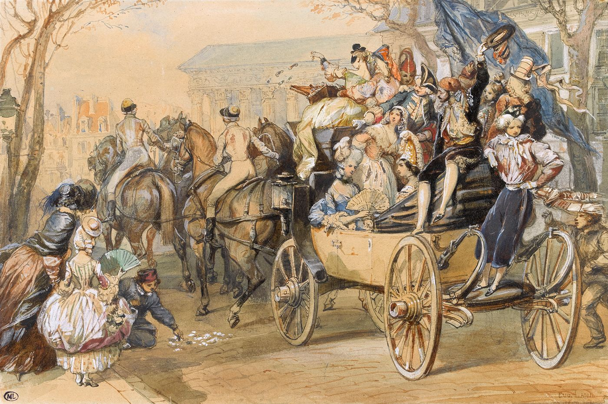
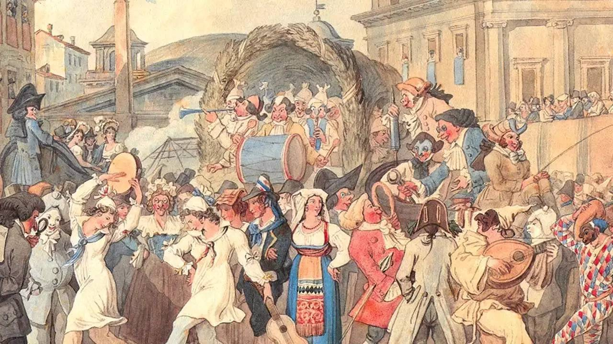

Carnaval
Le carnaval, cette période festive célébrée dans le monde entier, a des origines profondément ancrées dans les traditions païennes romaines. Initialement, il s'agissait d'une fête connue sous le nom de Calendes de mars, marquant la fin de l'hiver et célébrant le retour du printemps. Au cours de ces festivités, les limites étaient repoussées, permettant des transgressions de l'ordre établi à travers des déguisements et des festivités extravagantes. L'essence même du carnaval réside dans cette explosion de joie et cette liberté temporaire.
Périodes du carnaval
La période carnavalesque varie fortement entre les lieux ; En Europe, elle se déroule généralement à la période hivernale, au plus tôt en novembre et au plus tard en mai. Quelques traditions masquées commencent à la Toussaint, et le carnaval d'Allemagne commence le 11 novembre à 11 h 11 précises, lors des foires de la Saint-Martin. La majorité des carnavals européens a toutefois lieu après Noël, débutant soit à l'Épiphanie, pour la Saint-Antoine et le tuage du cochon, à la Chandeleur, un mois, quinze jours, ou le jeudi avant Mardi Gras. D'autres carnavals, tels que les Laetare, ont lieu à la mi-carême. Enfin, en Scandinavie, les carnavals ont lieu autour de la Pentecôte, et celui de Notting Hill se déroule au mois d'août. Plus particulièrement en Suisse, le carnaval de Bâle débute le lundi suivant le mercredi des Cendres, à 4 du matin, tandis qu'à Lucerne, il commence le jeudi gras également à 4 h du matin. En Grèce, il s'appelle Apokriá et se termine le Lundi pur.
Étymologie
Le nom masculin carnaval apparaît en français sous la forme carneval en 1549 pour exprimer le sens de « fête donnée pendant la période du carnaval ». C'est un emprunt à l'italien carnevale ou carnevalo. Il a pour origine carnelevare, un mot latin formé de carne « viande » et levare « enlever ». Il signifie donc littéralement « enlever la viande ». Des étymologies fantaisistes ont été jadis avancées, telle que « caro vale » pour « adieu la chair ». Une autre hypothèse propose carrus navalis (« char naval », en français), en relation avec le Bateau d'Isis (en) (Isis). Jusqu'au XIXe siècle, le nom masculin carême-prenant a été utilisé en français à égalité avec carnaval. Il a été orthographié de diverses manières : caresme-prenant, quaresmeprenant, etc. On le retrouve dans le journal de Pierre de l'Estoile, chez Molière, etc. En France on peut trouver des variantes régionales de carême-prenant, telles que caramentran en Provence. De carême-prenant, on a dérivé deux expressions. L'une : « tout est de carême-prenant », pour parler de certaines libertés, en particulier dans le domaine des mœurs, qui se prennent ou prenaient traditionnellement pendant le carnaval. L'autre, pour désigner une personne costumée en carnaval, ou en général quelqu'un d'habillé de façon ridicule. Dans cette situation, on entend crier « Au secours, au secours, votre fille on l'emporte, Des carêmes-prenants lui font passer la porte ». On trouve aussi dans le Bourgeois gentilhomme de Molière : « On dit que vous voulez donner votre fille en mariage à un carême-prenant ». Du nom carnaval dérive l'adjectif carnavalesque (relatif au carnaval), mais aussi certains régionalismes tels que carnavaleux et carnavalier : le premier désigne, dans la région de Dunkerque, en Belgique et au Québec, un participant au carnaval ; le second un artiste créant des œuvres pour le carnaval tels que chars, des géants, des grosses têtes, etc. Les « carnavaliers » les plus célèbres de France sont établis à Nice où le métier se transmet de père en fils depuis 1870 et où ce mot est traditionnellement utilisé.



